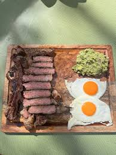

My name is Ferdinand Rios and I attend Lane Tech College Prep. Im 14 years old and my birthday is on March 5. Im currently unemployed but I would like to be an inspirational influencer to the youth. I look forward to what the future holds and O plan to do big things. In the future I want to attend Harvard University which is one of the hardest schools to get into.
My favorite food to eat at the moment is steak and egg on a cutting board with avocado.
My parents originate from Mexico but I was born in the U.S and I speak Spanish at home. I have lived in the U.S my whole life but I have visited Mexico multiple times. I am from Michoacan Mexico which is a state in Mexico that is next to Jalisco and I come from a small town called Maravatio.
In my free time I like to go outside and play soccer or basketball. If I have time I like to js watch shows on netflix or go on my bike with my friends.Im also very unemployed so sometimes I be playing on my ps5 blasting Fetty Wap on my jbl.
I am a Christian and I celebrate Mexican holidays and traditions like dia de los reyes,cinco de mayo, and dia de los muertos. These holidays originated in Mexico but my favorite is dia de los muertos because we are able to give rememberaance to our loved ones who passed away and the colors of the holiday are just amazing.